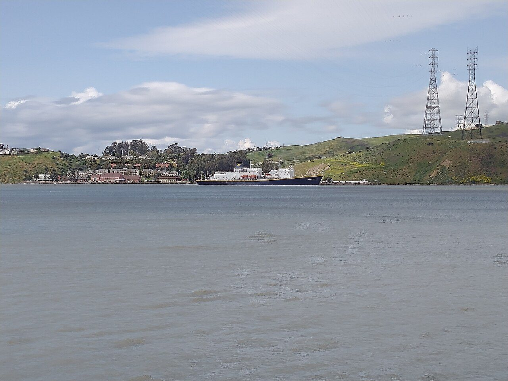
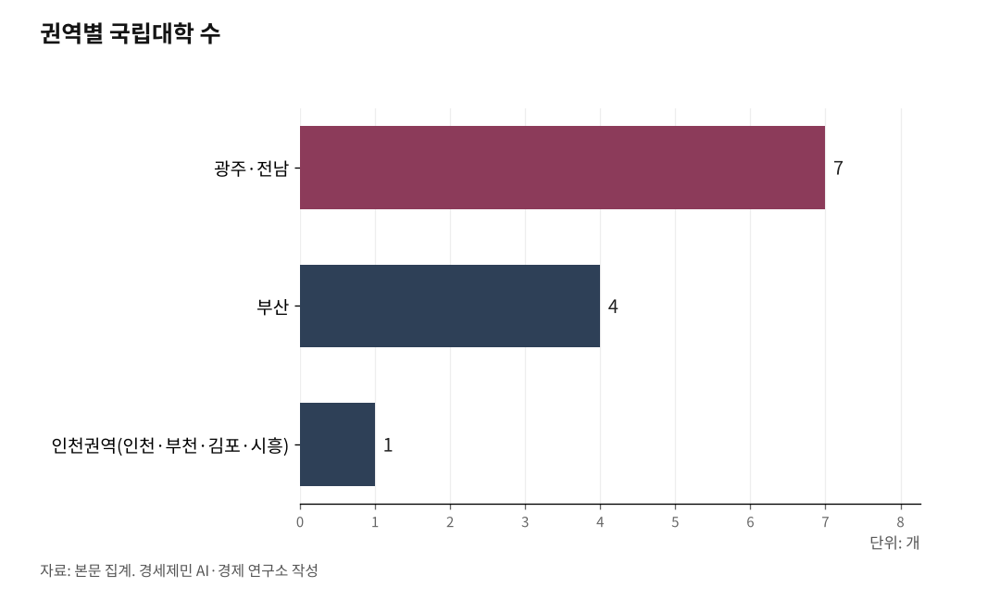

[인천해양산업, 생존기로⑥] 인천 해양대, 법이 막고 해수부가 외면
수도권정비계획법·글로컬대학·국립대 체계 삼중 장벽
해수부는 '부산 1극' 고수… 이재명 5극3특과 충돌
AI경세제민=김갑봉 기자 | 인천시의회가 먼저 나섰다. 2026년 2월 12일 제306회 임시회에서 '인천지방해양수산청 및 인천항만공사 관리·감독권 등의 단계적 이관 촉구 결의안'을 채택하고 결의대회를 열었다. 해수부 부산 이전 이후 인천 해양·항만 권한이 중앙과 부산으로 쏠리는 구조를 공론화했다.

그런데 해양 권한 이관과 해양 인재 양성은 별개 문제다. 해양대학 설립은 의회 결의로 해결할 수 없는 장벽이 세 겹으로 쌓여 있다. 수도권정비계획법, 글로컬대학30 사업, 국립대 체계다. ⑤편에서 인천에 해양대학이 없다는 현실을 짚었다. ⑥편에서는 왜 생기지 못했는지 그 구조를 살핀다.
의회는 결의했지만, 대학 설립은 다른 문제다
인천시의회는 2026년 2월 12일 제306회 임시회에서 인천지방해양수산청과 인천항만공사 관리·감독권의 단계적 이관을 촉구하는 결의안을 채택했다. 폐회 후 결의대회를 열었다. 박창호 의원(국민의힘·비례)과 이순학 의원(더불어민주당·서구5)이 성명서를 대표 낭독했다.
결의안 내용을 보면 해수부가 부산으로 이전한 이후 인천 해양·항만 거버넌스가 중앙집권 구조에 머물 경우 현장 대응력과 정책 연속성이 약화된다고 지적했다. 조직의 위치뿐 아니라 권한의 배치도 함께 재설계해야 한다고 촉구했다. 초당적 결의였다.
이 결의안은 행정 권한 이관에 초점을 맞춘다. 해수청과 인천항만공사 관리·감독권을 인천시로 넘기라는 요구다. 그런데 해양 인재를 키우는 문제, 즉 해양대학 설립은 행정 권한 이관과 전혀 다른 법적 경로가 필요하다. 의회 결의로 해결할 수 없는 장벽이 세 겹으로 쌓여 있다.

수도권정비계획법, 첫 번째 벽
수도권정비계획법은 4년제 대학 신설을 수도권에서 금지한다. 대학을 인구집중 유발 시설로 분류하기 때문이다. 수도권은 서울·경기·인천이다. 인천이 포함된다.
부산은 비수도권이다. 법의 적용을 받지 않는다. 같은 해양대학 신설 논의를 해도 인천은 출발점부터 다른 게임이다. 부산은 신청하면 되지만 인천은 법이 원천 봉쇄한다.
이 장벽이 실제로 작동한 사례가 있다. 목포해양대는 2024년 2월 인천대와의 통합을 추진했다. 목포해양대 구성원 투표에서 44%가 인천대 통합안을 지지했다. 그러나 법무법인에 검토를 의뢰한 결과 현행법상 불가능하다는 자문이 나왔다. 수도권정비계획법이 핵심 걸림돌이었다. 2024년 3월 통합 추진이 공식 중단됐다. 구성원 지지와 대학 간 합의가 있었어도 법 앞에서 멈췄다.
대학원대학은 예외 조항이 있다. 총량규제 심의를 거쳐 제한적으로 허용된다. 해사법·해상풍력·복합물류 특화 전문대학원을 먼저 설립하고 학부 과정으로 단계적으로 전환하는 방식이 현실적 우회로로 거론된다. 그러나 이 경로도 교육부 심의와 총량 쿼터 배정이라는 관문을 통과해야 한다.
글로컬대학30과 국립대 체계, 두 번째·세 번째 벽
두 번째 장벽은 교육부 글로컬대학30(지역혁신 중심 대학 육성 사업)이다. 이 사업의 목적 자체가 비수도권 대학 육성이다. 인천은 수도권이라 처음부터 지원 대상에서 배제된다.
한국해양대와 목포해양대는 이 사업을 활용해 통합을 추진했다. 2025년 5월 예비 지정을 받았고, 한국해운협회가 100억원 지원을 약속했다. 최종 본지정을 받으면 5년간 최대 1000억원이 투입되는 사업이다. 두 대학은 2025년 9월 본지정에서 탈락했지만 통합 추진은 포기하지 않았다. 통합이 완성되면 부산 본교에 목포 특화캠퍼스의 2캠퍼스 체제가 된다. 동해는 부산이, 서남해는 목포가 맡는다. 서해는 공백이다. 인천은 여기에도 없다.
세 번째 장벽은 국립대 체계다. 국립학교설치령에 따라 국립대 신설과 개편은 대통령령 사항이다. 새 캠퍼스를 추가하려면 중앙정부가 대통령령을 개정해야 한다.
인천대는 2013년 국립대학법인으로 전환했다. 그런데 국립대학법인과 일반 국립대학은 법적 성격이 다르다. 목포해양대는 일반 국립대학이다. 두 기관 사이에 재산을 통합·이전할 법령이 없다. 목포해양대-인천대 통합이 막힌 또 다른 이유다. 수도권정비계획법과 국립대 체계의 이중 장벽이 동시에 작동했다.
국립대 지역 균형도 심각하게 기울어져 있다. 부산에는 국립대가 4개다. 부산대·부경대·한국해양대·부산교대다. 광주·전남에는 7개가 있다. 인천권역(인천·부천·김포·시흥)에는 인천대 1개뿐이다. 그마저 2013년에야 국립으로 전환됐다.
해수부가 반대하는 이유
세 겹의 법·제도 장벽 너머에 또 하나의 벽이 있다. 해양수산부의 정책 기조다.
해수부가 공식 문서로 인천캠퍼스 반대 입장을 밝힌 적은 없다. 그러나 정책 방향과 행보를 보면 구조적으로 부정적일 수밖에 없는 이유가 네 가지다.
첫째, 국립대 정원 감축·통합 기조다. 2000년대 후반 이후 정부는 학령인구 감소를 이유로 국립대 구조조정을 기본 방침으로 삼아왔다. 해수부도 이 틀 안에서 해양 인력 정책을 세웠다. 2009년 인천 해양대 설립 논의 당시 한국해양대는 "정부가 국립대 정원 감축·통폐합을 추진하는 상황에서 인천에 또 다른 국립 해양대를 세우는 것은 정부 정책에 반하고 비현실적"이라고 지적했다. 이는 해수부의 기본 기조와 일치했다.
둘째, 부산 해양수도 전략과의 충돌이다. 해수부가 부산으로 이전하고 한국해양대·목포해양대 통합으로 '1국 1해양대' 체제를 만드는 구상이 추진되고 있다. 이 구도에서 인천에 별도 캠퍼스를 세우면 부산 중심 해양수도 전략의 집중도가 떨어진다. 해수부 입장에서는 정책 일관성과 예산 집중 측면에서 부담이다.
셋째, 수도권 집중 심화 논리다. 2009년 논의 때 한국해양대는 "인천시가 수도권 수요만을 이유로 해양대를 새로 설립하려 한다"며 "수도권 집중 현상을 심화시키고 국토 균형발전에 역행한다"고 비판했다. 이미 인천대 동북아물류대학원과 인하대 아태물류학부 등이 있으니 수도권에 또 해양대를 세울 이유가 없다는 논리였다.
넷째, 기존 해양대 정원 확대 우선 논리다. 한국해양대는 같은 성명에서 "해기사(선장·기관장) 양성은 시설·교육과정 기준이 엄격해 막대한 예산이 들어가므로, 새 해양대 설립보다 기존 해양대 정원을 늘리는 것이 바람직하다"고 밝혔다. 해수부는 완전히 새로운 인천 해양대 설립에 예산·정원·정책 중복 측면에서 소극적인 입장을 유지하고 있다.
'5극3특'에도 배치된다
해수부의 반대 논리는 정부 스스로 내건 국가균형발전 전략과 충돌하는 지점이 있다.
이재명 정부는 5극3특(5대 광역경제권·3대 특별자치) 전략을 국가균형발전 로드맵으로 내세웠다. 수도권·충청권·호남권·영남권·강원권 5대 광역 거점을 고르게 육성하고, 서해·환황해 축을 별도 성장축으로 키우겠다는 방침도 담겼다.
그런데 지금 해양수산부의 실제 정책 그림은 다르다. 해수부·한국해양수산개발원(KMI)·한국해양과학기술원(KIOST)·국립수산과학원·한국해양대가 모두 부산권에 집중된다. 한국해양대-목포해양대 통합도 부산 본부에 목포 특화캠퍼스를 더하는 구조다. 동해와 서남해는 해양 고등교육의 양 축이 되고, 서해·환황해 관문항 인천은 항만·공항·법원은 있지만 해양대학과 해양행정 본부는 없는 배후지로 남겨지는 구조다.
동해·남해(부산·목포)에만 해양대학을 두고 서해 관문항 인천에는 두지 않는 해양교육 체계가 5극3특이 내건 다극 분산형 거점 전략과 어떻게 정합하는지, 정부의 답이 아직 없다.
인천 국회의원 11명 앞에 특별법 발의, 수도권정비계획법 개정, 국립학교설치령 개정, 국비 확보라는 과제가 놓여 있다. 2026년 6월 3일 지방선거가 불과 두달여 밖에 남지 않았다.
참고문헌
·"인천시의회, 인천해수청·IPA 권한 이관 촉구 결의대회", 내외일보, 2026.2.12. https://www.naewoeilbo.com/news/articleView.html...
·"목포해양대-인천대 통합 추진 포기", 경인일보, 2024.3.24.
·"목포해양대-인천대 통합 추진", 한국일보, 2024.2.16.
·"한국해양대·목포해양대 글로컬대학 본지정 탈락", 해사신문, 2025.9.28.
·"국회 본회의 해사법원 설치 확정, 2028년 3월 개원 목표", 인천투데이, 2026.2.12. https://www.incheontoday.com/news/articleView.html
·"경인권 해양대 공백", 인천투데이, 2025.7.25. https://www.incheontoday.com/news/articleView.html
·"2024년 인천항 컨테이너 물동량", 인천항만공사 보도자료, 2025.1.2.
·수도권정비계획법
·국립학교설치령
사진 출처
· [대표사진] Alfred Twu, "Cal Maritime Academy.jpg", 위키미디어 공용, CC0, https://commons.wikimedia.org/wiki/File:Cal_Maritime_Academy.jpg
※ 이 기사는 인공지능을 활용해 작성했습니다.
관련기사
- [인천해양산업, 생존기로⑤] 경인경제권, 해양대학이 없다
- [인천해양산업, 생존기로④] 해상풍력 O&M(운영과 정비)
- [인천 해양산업, 생존기로 ③] 7GW 배후항만, 10만평 되겠나... 에스비에르의 8분의 1
- [인천해양산업, 생존 기로 2] 해상풍력 53조 '무주공산'... 연구 인프라 전무
저작권자 © AI경세제민 무단전재 및 재배포, AI학습 및 활용 금지